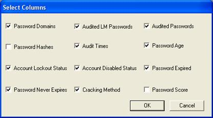
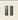
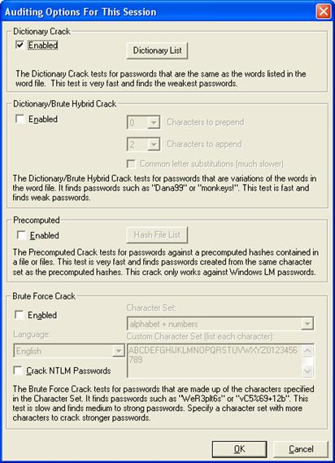

LC5 Command Reference
The following sections
explore the commands available from the toolbar.
File ...
- File
New Session
This creates a new LC5 audit session.
- File
Open Session
This command opens a previously stored LC5 session from a *.lcs file.
- Close
Session
This stops and closes the current audit session. You are prompted about
whether to save the session so it can be continued at a later time.
- File
Save and Save As
You may save the session currently opened to preserve the current state
of your audit. This allows you stop and continue your audit at a later
time, or move it to another machine without losing your progress. Save
and Save As commands save the current state of the passwords, and
whether they are uncracked, partially cracked or cracked in the LC5
(*.lcs) format. The *.lcs file can be used later for continued cracking,
or to restart a new session using the same target password hashes, but
different audit options.
- Export
There are two types of export, Session and Password File. Session
exports provide the ability to export all visible columns into a
tab-delimited file. This is helpful to sort and modify the results, reformat
them for presentation, or print them out. Password File Exports save the
list of cracked passwords to be used in a later audit. When exporting in
either mode, keep any exposed passwords in a secure location.
- Import
You can
import previous LC saved sessions into LC5 for continued saved audits.
- LC5
Wizard
Launch the Wizard to configure common settings for an LC5 audit.
- Create
Remote Agent
You can embed a public key in the LC agent used for remote import of
Windows passwords. If the agent is installed manually, you must embed a
public key first.
To
install the LC agent, copy it to the remote machine and run
lcagent.exe /install.
To
remote the LC agent, run
lcagent.exe /remove
on
the remote machine.
When
removing, a display warns that communication with existing agents will be
impacted by removing (since your public key will not match other keys).
When
removed, LC5 detects that the agent has a different public key than you do,
and asks you if you want to fix this (which it does by deleting the agent,
embedding the current public key in the agent, and then reinstalling it over
the network).
- Preferences
Configures the default settings for future auditing sessions.
- Exit
Exit terminates any running crack session and exits the program.
View ...
- Toolbar
Show or hide the LC5 Toolbar.
- Select
Visible Columns
Select the columns visible during the audit. The following items are
available:
- Password
Domains
For Windows machines, this feature displays the NT domain where the
password came from, if available. This is helpful when working with
large lists of user accounts.
- Password
Hashes
Viewing the password hashes is interesting and useful to some people,
and merely clutter to others. Use this option to toggle their display
on or off.
- Account
Lockout Status
For Windows user accounts only. Indicates whether or not the user
account is locked out.
- Password
Never Expires
For Windows user accounts only. Indicates that the user's password
never expires.
- Audited
LM Passwords
The administrator can turn the display of audited passwords on or off.
Use View ... Audit Times to see whether a password has been
cracked when password display is turned off.
- Audit
Times
Displays the amount of time LC5 took to crack each password. The value
provides an approximate quantitative measure of how robust a user's
password is.
- Account
Disabled Status
For Windows user accounts only. Indicates that the user's account is
disabled.
- Cracking
Method
The cracking method helps determine which users have weak passwords at
a glance. Sort by the Audit Method column heading to see if the
passwords are cracked by the User Information, Dictionary, Hybrid, or
Brute Force attacks, or not at all.
- Audited
Passwords
Shows the clear text passwords after they are cracked.
- Password
Age
Shows how long since the password was last changed.
- Password
Expired
For Windows user accounts only. Indicates that the user's password is
expired.

- Visible
Notification
Displays an alert dialog when the audit completes, even if you're
working in another application.
- Reset
Warning Dialogs
Displays and disables warning dialogs.
- Minimize
to Tray
Minimizes the program to the system tray. The program window is
reactivated by clicking on the small icon. This is useful when you are
intending to crack for several days. If the SMB Packet Capture window is
open, it is minimized also.
- Hide
Hides the program window completely. It does not show as an application
in the task manager, although LC5 continues to appear as a process. You
can make the program visible again using the Ctrl+Alt+L key
combination. If the Sniffer window is open, it is also hidden.
Session
- Import
...
This option opens a dialog box allowing the user to choose where the
password hashes originate.
- Import
From Local Machine
This command imports password hashes used by the operating system
currently running.
- Import
From Remote Machine
Displays a list box to add a computer name or IP address. Select
multiple remote Windows or Unix machines to be added. Administrator
privileges and remote registry access are required to dump the password
hashes in this method.
- Import
From SAM file
Imports password hashes stored in a SAM file. Note that a SAM file is
locked and inaccessible while the operating system that uses it is in
use. You may copy a SAM file by booting another operating system such
as DOS (running NTFSDOS), or Linux (with NTFS file system support) and
retrieving it from the target system, or you may retrieve it from a
backup tape, from a Windows NT Emergency Repair Disk, or from a repair
directory on the system hard drive.
- Import
From LC4 file
Imports password hashes from a saved LC4 session. The imported password
hashes become part of the session currently open, but do not affect the
Session Options.
- Import
From PWDUMP file
This imports the output of a pwdump session into LC5.
- Import
From Sniffer
This command launches the network packet capture window. SMB packet
capture monitors your ethernet for SMB network authentication packets.
When an authentication session is captured, it will display the
authentication parameters: username, challenge, and hashes in the
window.
The
contents of the window can be saved at any time to a *.lcs file using
the Save Capture button, or they can be cleared using the Clear
Capture. button. The capture session is terminated when the window is
closed, or by pressing Done.
- Begin
Audit
Starts the audit engine on the password hashes you have loaded, based on
your configuration of the Session Options. A progress display
shows the status.
- Pause
Audit 
Halts the current audit, saving any progress that has been made. You may
continue the audit where you left off at a later time by choosing to Begin
Audit again.
- Stop
Audit
After a warning dialog, this command stops the current session,
discarding any brute force progress already made.
- Session Options
Opens the Auditing Options For This Session dialog box,
containing the different settings for modifying how LC5 tries to crack
the password hashes. These settings are discussed in greater detail
under the section Using LC5.

Schedule
- Schedule
Audit
Dialog to schedule regular password audits.
- View
Scheduled Tasks
Displays all the scheduled password audits. Items can be removed from
the list by clicking on them and pressing delete.
Remediate
- Disable
Account(s)
Disables the selected accounts.
- Force
Password Change
Settings to force a selected user account to change their passwords on the
next login.
- Select
All Expired Accounts
Selects all accounts with expired passwords, which can be disabled or
forced to change their password on the next login.
- Select
All Cracked Accounts
Selects all accounts that have been cracked, which can be disabled or
forced to change their password on the next login.
- Select
All Accounts With Weak Passwords
Selects all accounts with weak passwords, which can be disabled or
forced to change their password on the next login.
Help
- Documentation
Opens this help file.
- LC5
Website
Launches your browser to the LC5 website where you can find updates and
additional program information as it becomes available.
- Online
FAQ
Launches your browser to the online FAQ about LC5.
- About
LC5
Displays the program version information, Serial Number, and Unlock Code
(for a registered copy of LC5).
|